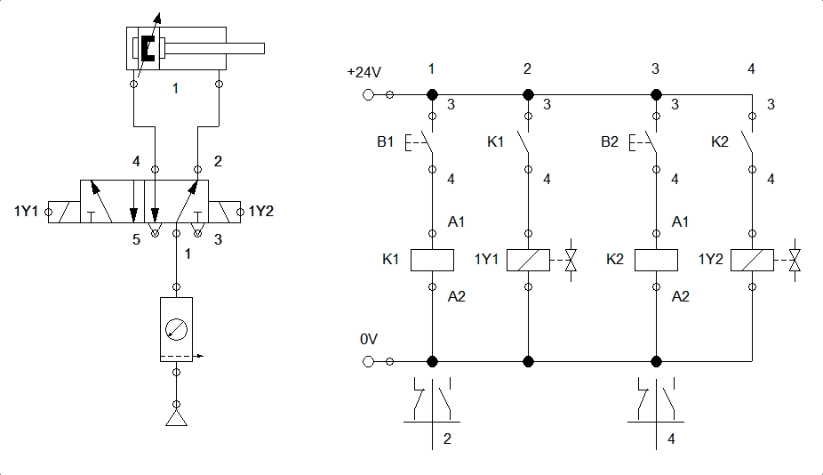
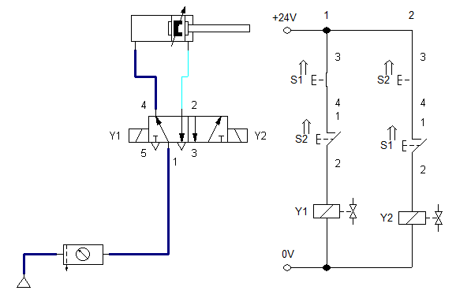
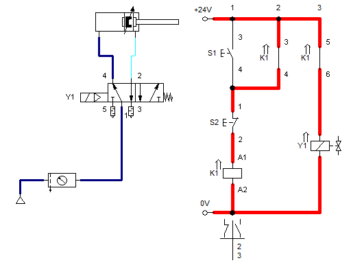
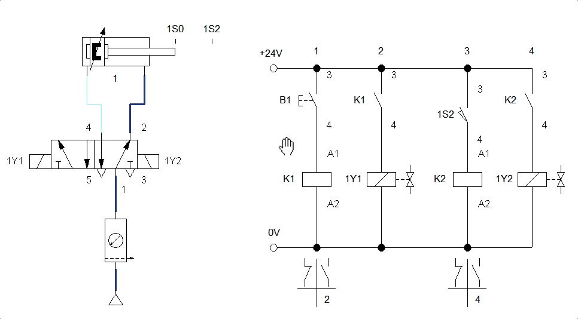

Acionamentos Eletro-Pneumáticos
Exemplos
Problema 2: com pistão de acionamento simples, acionamento por botão e "retorno automático" por mola: problema2.ct:

Problema 3: problema3.ct : usar um botão N/A para comandar o avanço de um pistão e outro botão N/A para comandar o retrocesso do pistão:

Obs.: Note porém que o ciruito anterior não prevê nenhuma proteção para acionamento simulatâneo das 2 chaves:

Uma possível solução é mostrada abaixo ( parker_circuito_04a.ct ): que mostra o que ocorre quando o usuário pressiona simultaneamente as chaves S1 e S2:

Problema: haveria outra solução para o circuito pneumático anterior, mais "econômica"?
Solução possível: parker_circuito_04.ct : que mostra o que ocorre quando se pressionam simultaneamente as chaves S1 e S2:

E outra solução possível ainda é: ( parker_circuito_04c.ct ): Neste caso S2 apenas interrompe a alimentação do contator K1 (interrompendo energia para bonina Y1):

Note que o circuto elétrico associado com o relé K1 é do tipo "selo" ou de "auto-retenção" (uma verz ewnergizada a bobina do relé, ela continua energizada, até que os contatos S2 se abram).
Problema 4: problema4.ct : Similar ao anterior, mas note que o retrocesso do pistão é feito automaticamente quando o mesmo atinge o final da sua excursão (uso de chave de fim de curso, 1S2):

Ciruito 06 da apostila da Parker(pág. 75): Neste caso, um circuito de ação dupla, com amortecedore de final de curso, deve avançar e retroceder automaticamente. Mas com um detalhe: deve haver um botão (S1) para comandar o avanço e retrocesso do pistão uma única vez. E deve haver um segundo botão (S2) que quando acionado, faz com que o pistão avance e retroceda automaticamente um número de vezes, onde este é programado num relé-contador Kc.
Um relé contador é um tipo de relé, "Kc", recebe impulsos elétricos na sua bobina contadora que leva a numeração A1 e A2. A cada impulso recebido nesta bobina, este relé realiza uma contagem (dispositivo eventualmente mecânico). O usuário programa o valor limite desta contagem. Quando este limite é atingido, seus contatos de saída invertem de estado. Este relé só volta a zero (é resetado) quando recebe um impulso na sua bobina zeradora, cujos contatos normalmente são representados pela numeração R1 e R2.
Segue parte inicial da resposta: parker_circuito_06_1a-parte.ct

Seguem mais exemplos...
Fernando Passold, em 03/04/2024.